Qihang Li
Hi, I am Qihang Li, a PhD student in Computer Science at North Carolina State University, advised by Dr. Peng Gao in the CoRob Lab.
My research interest is robot collaboration: how robots can work with teammates, whether other robots or humans, through perception, task allocation, and coordinated execution, among others. I am especially passionate about making my algorithms run reliably and efficiently on real robots.
Before joining NC State, I worked at the SAIR Lab, where I was fortunate to be mentored by Chen Wang, and to receive remote guidance from Junyi Geng of the ARI Lab at Penn State. I am also passionate about healthcare: at Duke and Johns Hopkins, I had the privilege of working with Maciej Mazurowski and Mehran Armand on medical image analysis and surgical robotics, respectively.
News
- Sep 2026Two papers submitted to ICRA 2027. I will also attend IROS 2026 in Pittsburgh.
- Jun 2026Our paper on communication-efficient relative pose estimation for ephemeral collaborative perception (CERPE) was accepted to IROS 2026. See the project page and paper.
Publications (show selected / show all by date / show all by topic)
Year: 2026 / 2025 / Before 2025
Current Research Topics: Collaborative Perception / Robot Planning & Learning
Past Research Topics: Medical Robotics / Medical Image Analysis
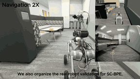
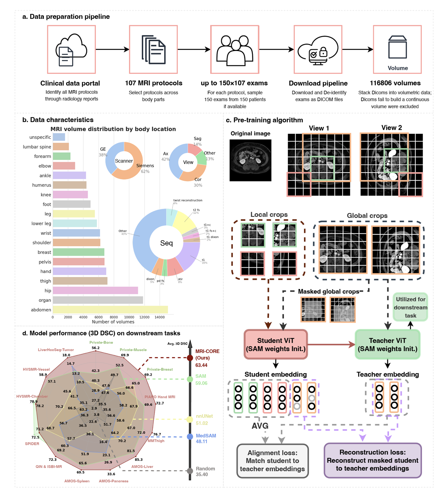
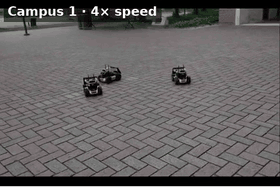
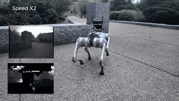
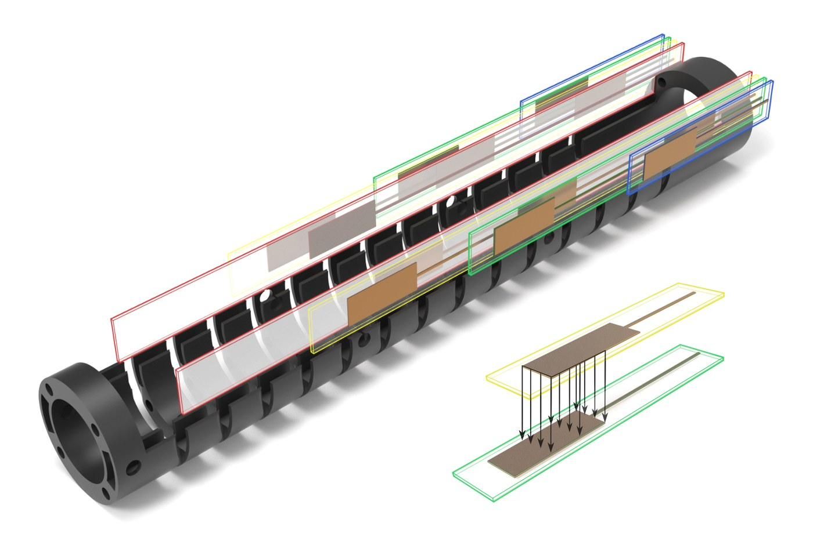
Data-driven Shape Sensing of Continuum Dexterous Manipulators Using Embedded Capacitive SensorIEEE Sensors, 2023. Top 5% of the accepted papers
2026
2025
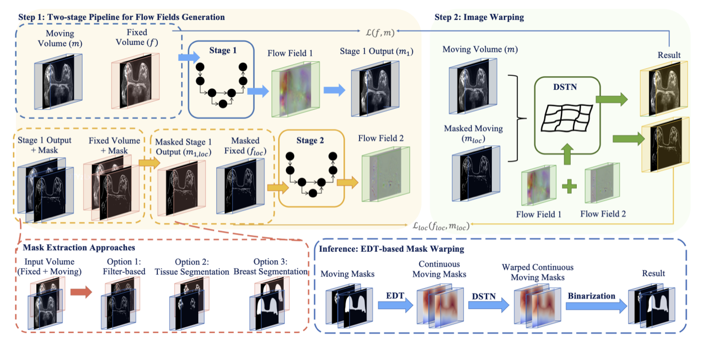
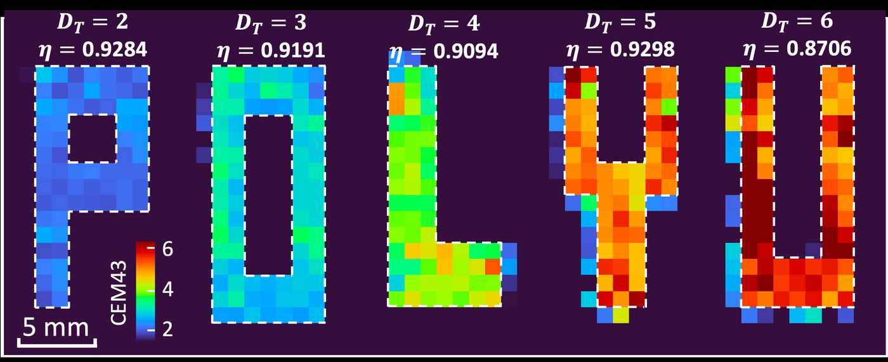
A Hierarchical Laser Control Strategy for Spatially Uniform Thermal Dose Delivery in Laser-Induced Thermal TherapyIEEE/ASME Transactions on Mechatronics (TMech), 2025.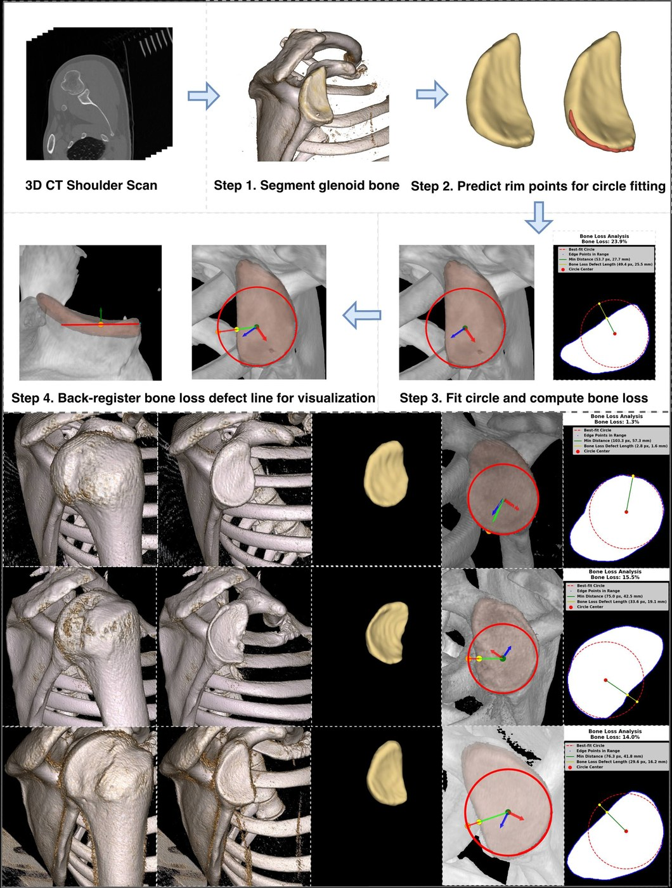
Automated Glenoid Bone Loss Measurement and Segmentation in CT Scans for Pre-operative Planning in Shoulder InstabilityPreprint.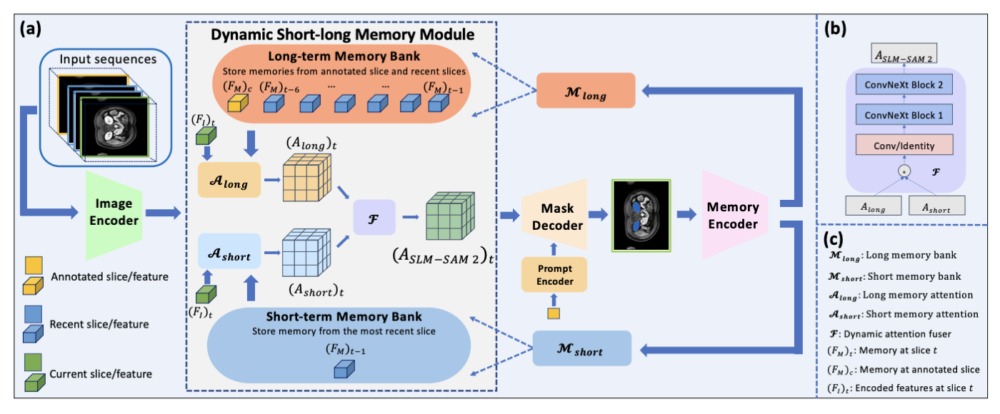
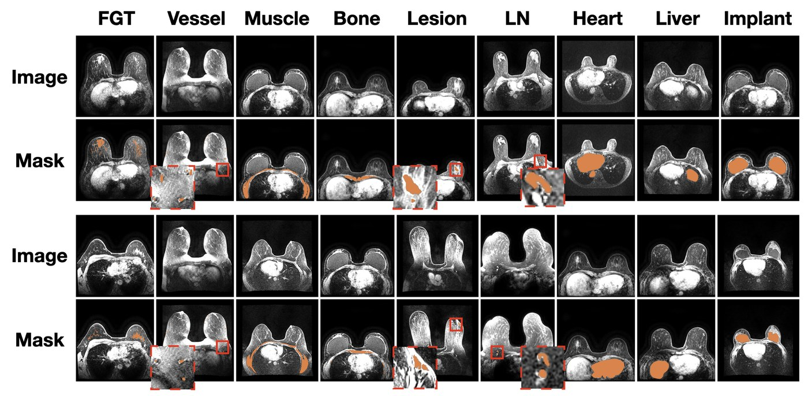
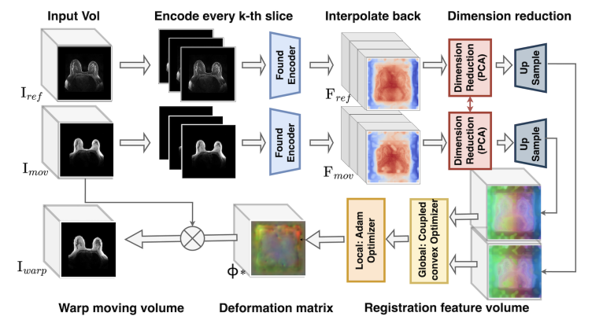
Are Vision Foundation Models Ready for Out-of-the-Box Medical Image Registration?MICCAI, DeepBreath Workshop, 2025. Best Paper Award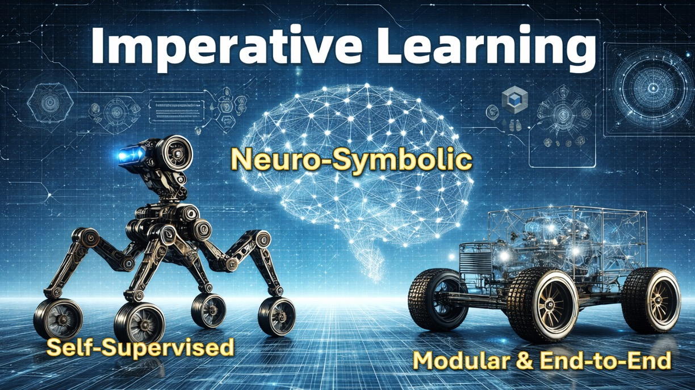
Imperative Learning: A Self-supervised Neural-Symbolic Learning Framework for Robot AutonomyThe International Journal of Robotics Research (IJRR), 2025.
Before 2025
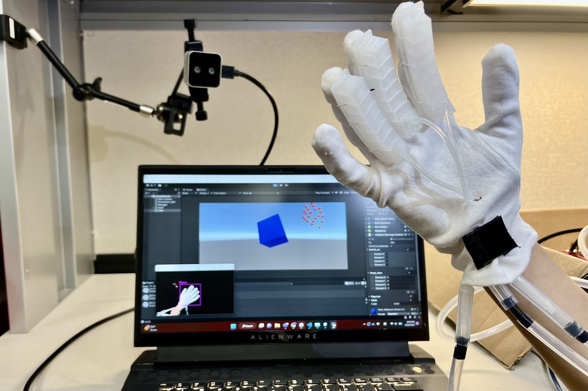
Advancing Hand Rehabilitation: A Novel 3D-Printed Soft Pneumatic Glove for Enhanced Mixed Reality InteractionIEEE Haptics Symposium, 2024. WIP paper. † Co-first authors.- Data-driven Shape Sensing of Continuum Dexterous Manipulators Using Embedded Capacitive SensorIEEE Sensors, 2023. Top 5% of the accepted papers
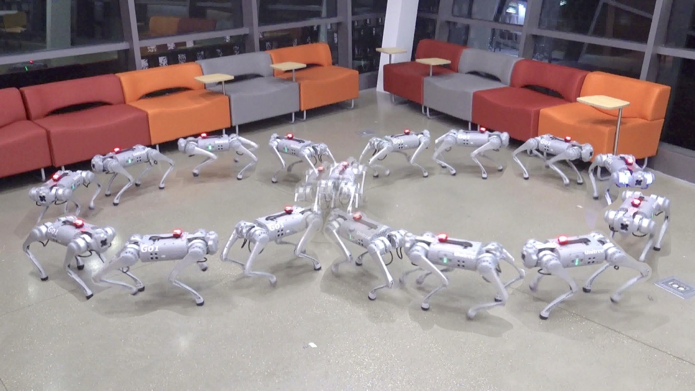
Collaborative Perception
Robot Planning & Learning
- Imperative Learning: A Self-supervised Neural-Symbolic Learning Framework for Robot AutonomyThe International Journal of Robotics Research (IJRR), 2025.
Medical Robotics
- A Hierarchical Laser Control Strategy for Spatially Uniform Thermal Dose Delivery in Laser-Induced Thermal TherapyIEEE/ASME Transactions on Mechatronics (TMech), 2025.
- Advancing Hand Rehabilitation: A Novel 3D-Printed Soft Pneumatic Glove for Enhanced Mixed Reality InteractionIEEE Haptics Symposium, 2024. WIP paper. † Co-first authors.
- Data-driven Shape Sensing of Continuum Dexterous Manipulators Using Embedded Capacitive SensorIEEE Sensors, 2023. Top 5% of the accepted papers
Medical Image Analysis
- Automated Glenoid Bone Loss Measurement and Segmentation in CT Scans for Pre-operative Planning in Shoulder InstabilityPreprint.
- Are Vision Foundation Models Ready for Out-of-the-Box Medical Image Registration?MICCAI, DeepBreath Workshop, 2025. Best Paper Award